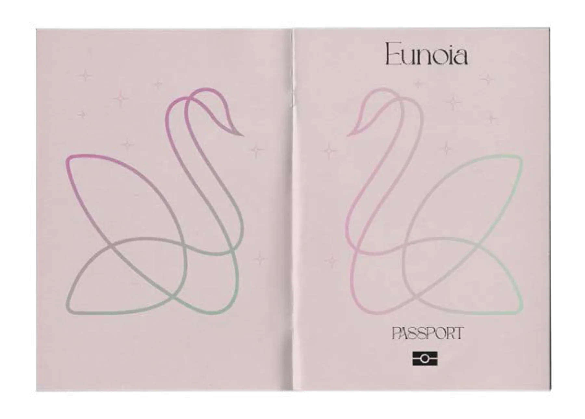
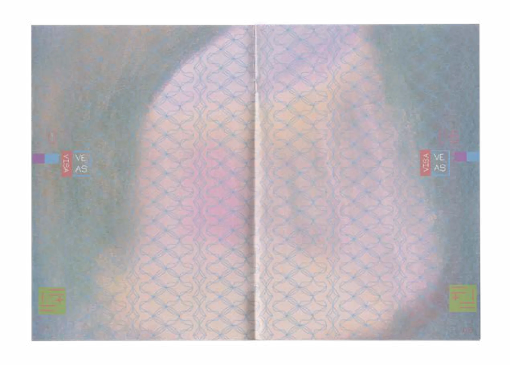
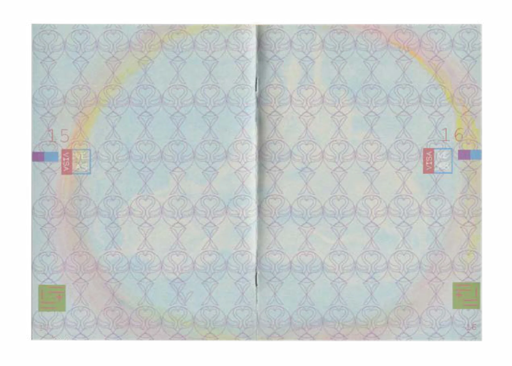
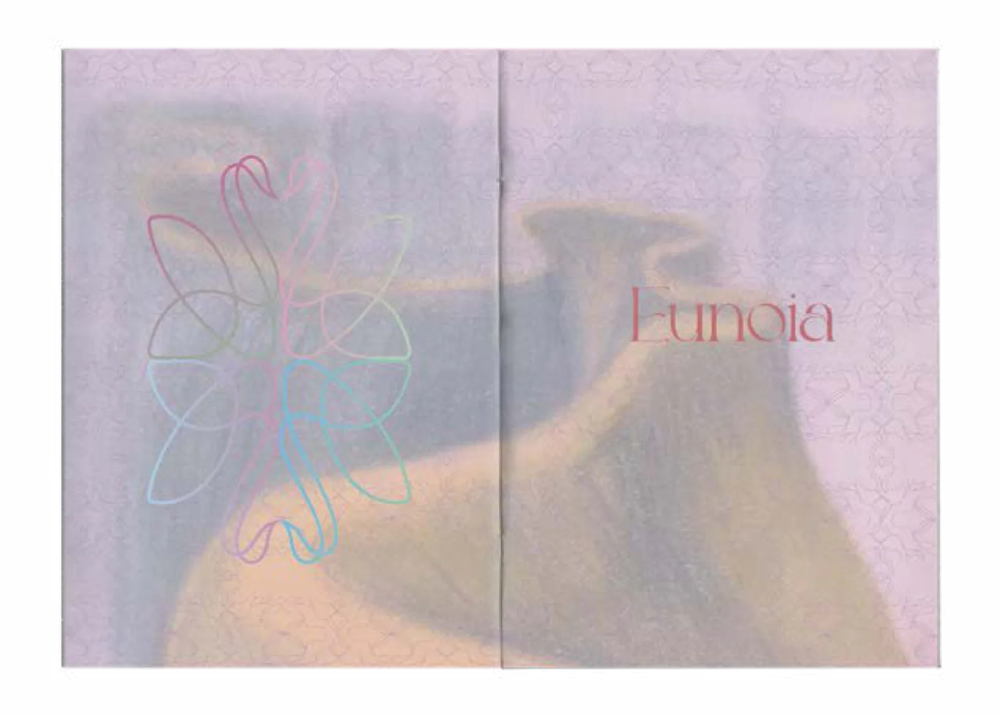
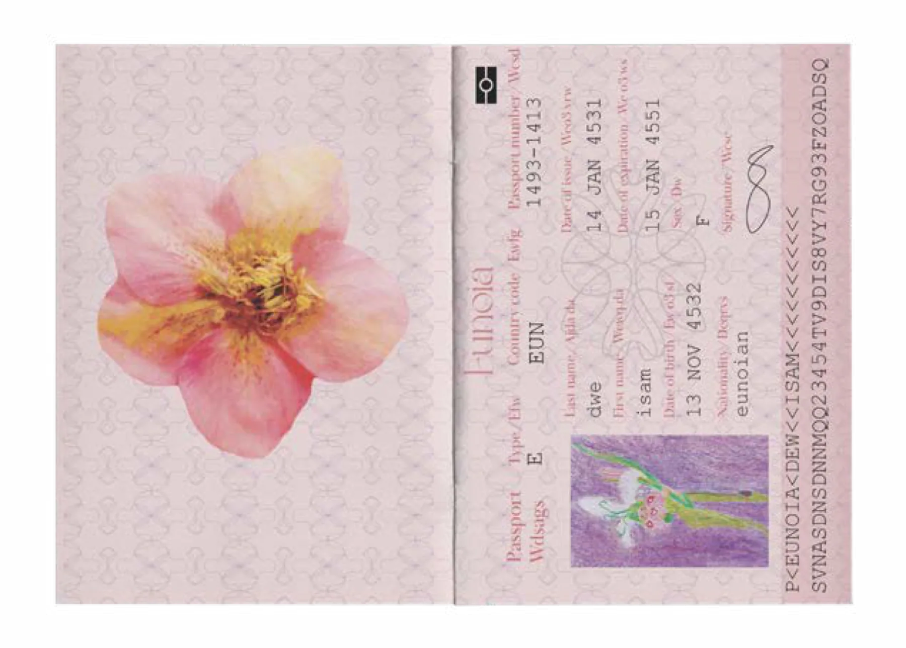
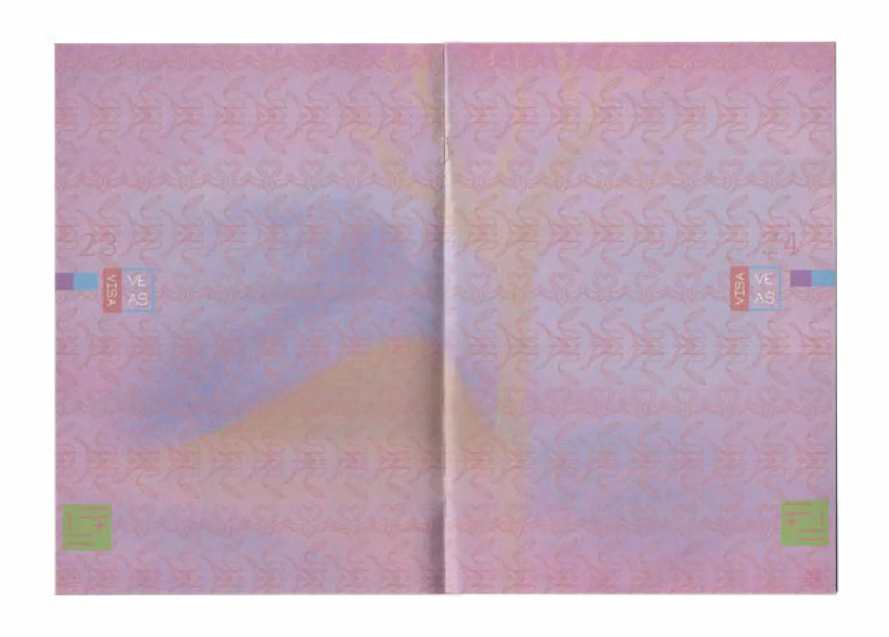
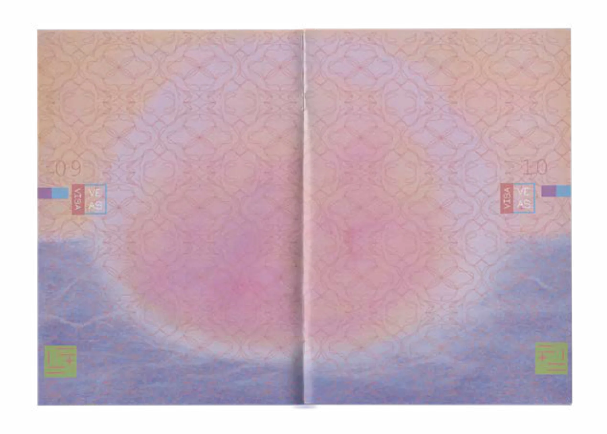
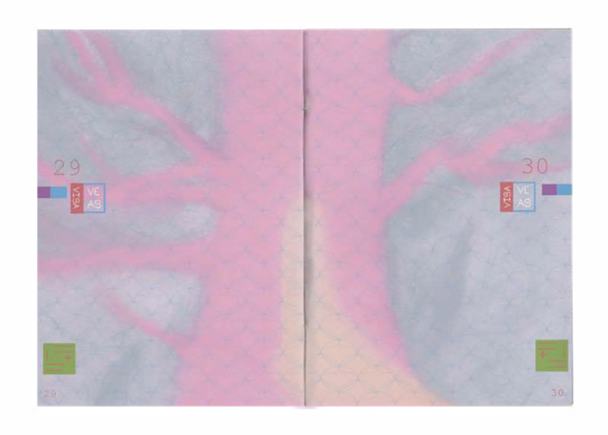
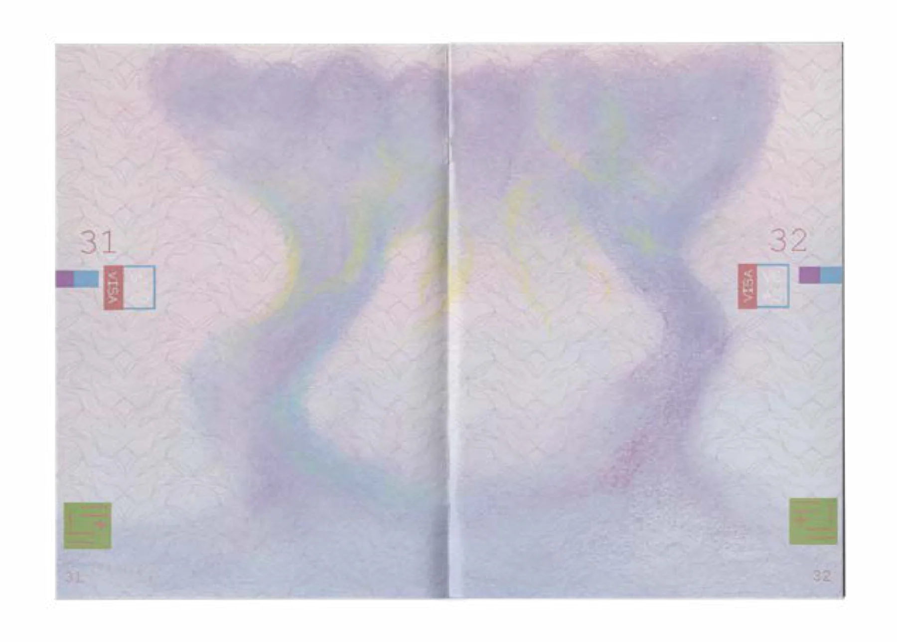

PHAM Nhu Quynh
Contact
PHAM Nhu Quynh
Contact
“Passport” of an imaginary countryConcept, Visual Identity, Editorial Layout — Group Project
Adobe Lightroom, Adobe Illustrator
« Passeport » d’un pays imaginaireConcept, identité visuelle, mise en page éditoriale — projet de groupe
Adobe Lightroom, Adobe Illustrator
PASSPORT ProjectProjet

Creative IntentionIntention créative
This project involved designing the house style of an imaginary country through its national passport. Our fictional nation, Eunoia – meaning “beautiful thinking” or “good will” – was developed around a poetic and fairytale-inspired concept. The visual identity is built around three key symbols: Swan, Lily of the Valley, and Butterfly.
Ce projet consistait à concevoir la charte graphique d’un pays imaginaire à travers son passeport national. Notre nation fictive, Eunoia — qui signifie « belle pensée » ou « bienveillance » —, s’est construite autour d’un concept poétique inspiré des contes de fées. Son identité visuelle repose sur trois symboles clés : le cygne, le muguet et le papillon.
Passport interior pagesPages intérieures du passeport









Visual approachParti pris visuel
We used pastel-colored illustrations, enhanced with a purple filter and a washed-out effect, to create a soft, dreamlike background. Pressed flower illustrations and repeating patterns were used throughout the layout to add elegance.
Nous avons utilisé des illustrations aux tons pastel, rehaussées d’un filtre violet et d’un effet délavé, pour créer un fond doux et onirique. Des illustrations de fleurs séchées et des motifs répétés ponctuent la mise en page et lui apportent de l’élégance.